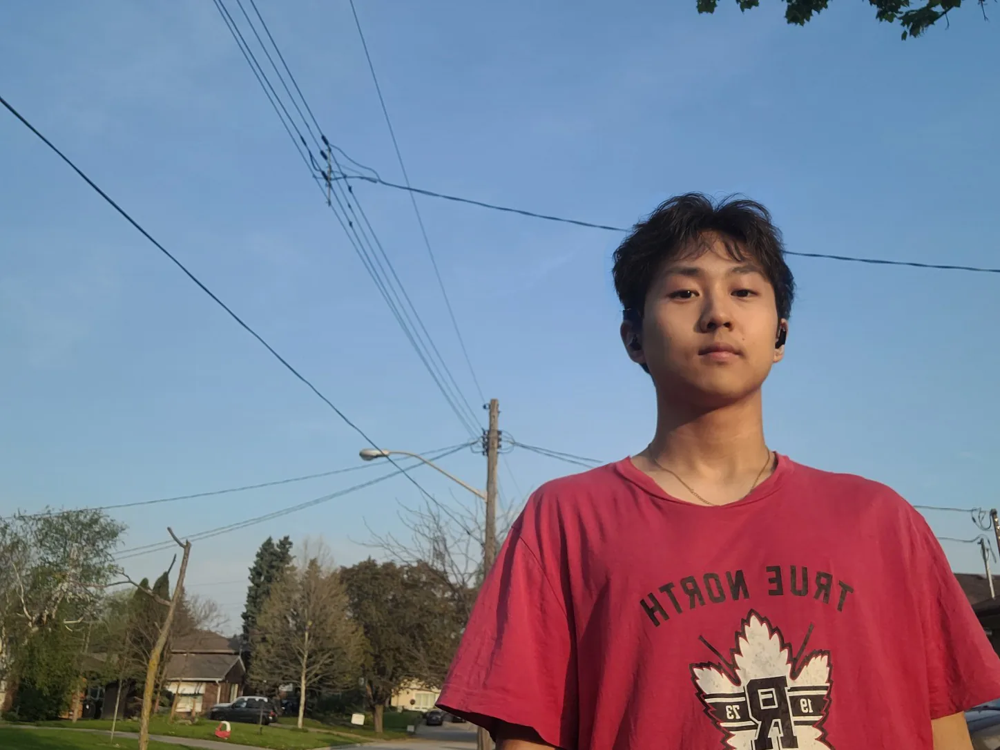
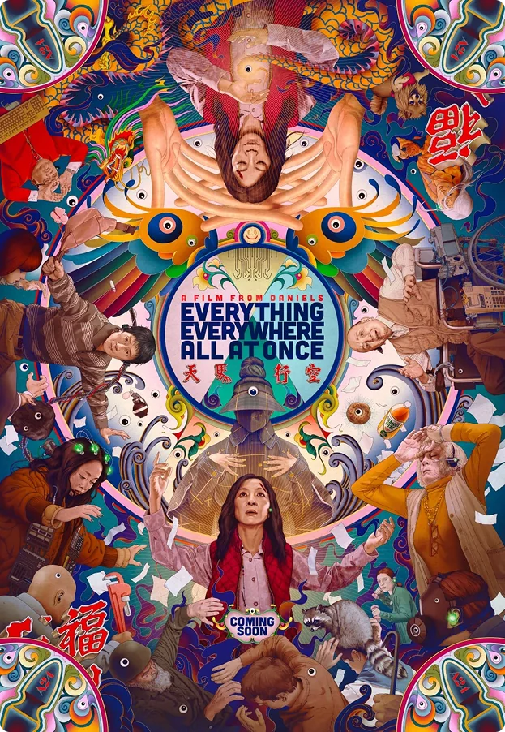
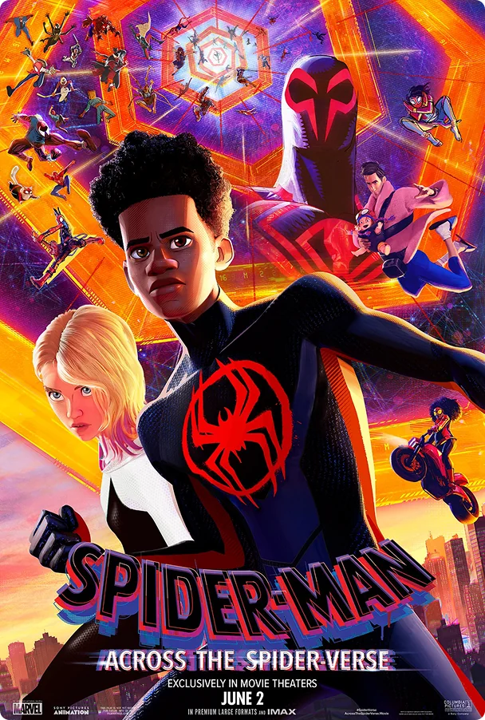
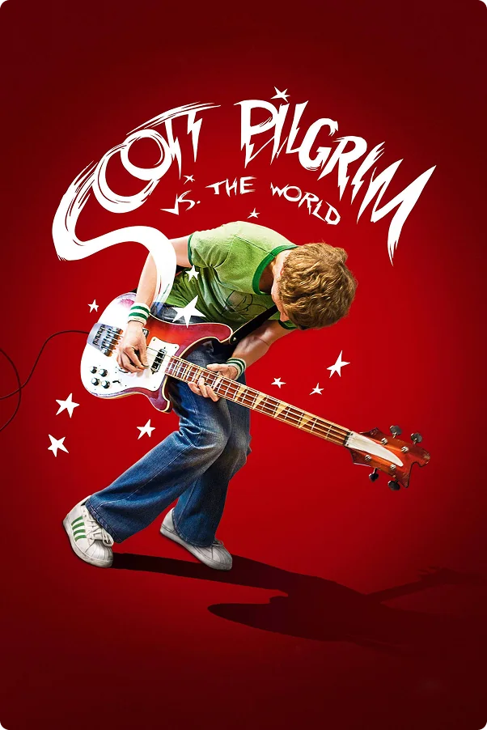
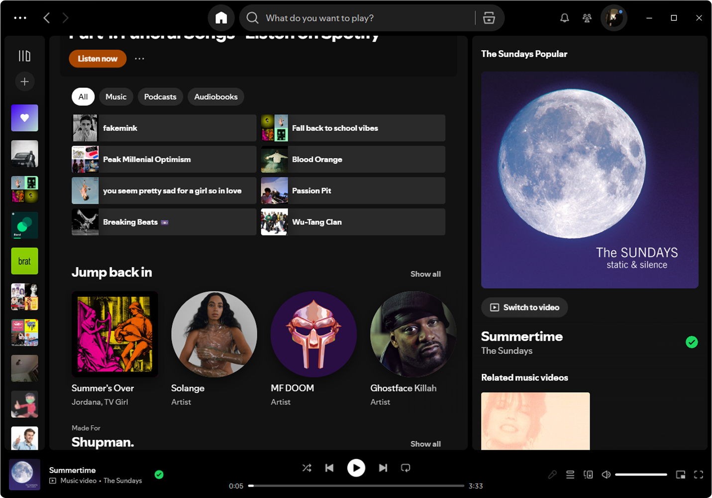
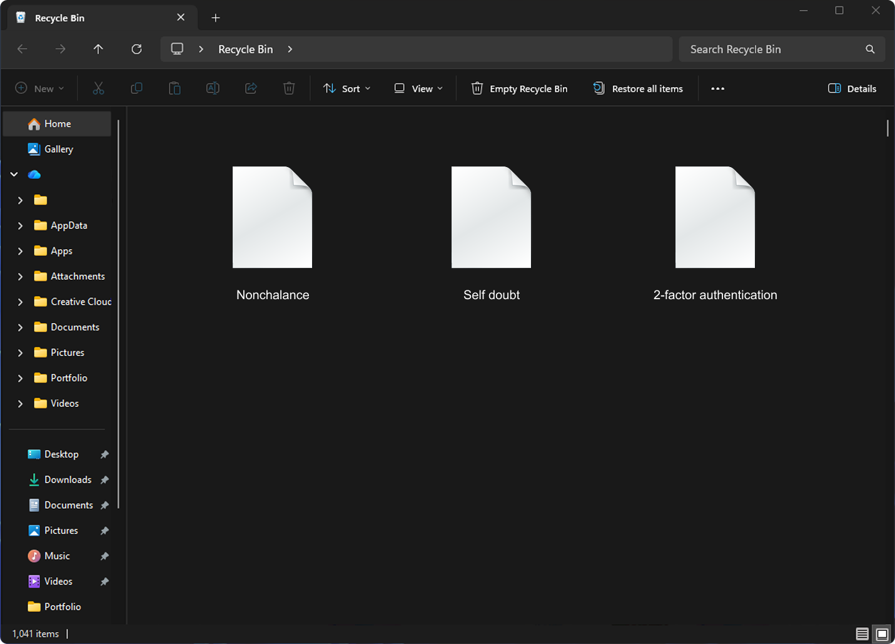

Bonjour
My name is Jaydon, and from a young age, I've always been drawn to art and the process of bringing ideas to life. Inspired by the media I consumed and experiences like visiting the Ontario Science Centre, I became fascinated with the idea of not just creating things, but curating experiences across both physical and digital spaces.
That passion led me to the University of Waterloo, where I study Global Business and Digital Arts. Throughout my studies, I've developed a strong interest in product and visual design, exploring how thoughtful visuals, intuitive interfaces, and interactive experiences can come together to communicate ideas and solve problems.
Whether I'm designing a digital product, developing a visual identity, or creating engaging content, I'm interested in finding the balance between creativity, functionality, and storytelling.

My design ethos
Rigor over surface polish
I ground design decisions in research, not aesthetics alone. Every choice should trace back to how people actually behave or what the business needs, not just to a step in the process.
Craft discipline that resists shortcuts
When a tool hits its limits, I find a proper way around it instead of papering over the gap. The small calls get the same care as the big ones, so nothing is left messy.
Identity-driven visual language over generic UI conventions
My background in graffiti, lettering, and hip hop shapes how I see. I lean toward distinctive, opinionated design over templated patterns, and build each piece around the audience it speaks to.
-

-

-


